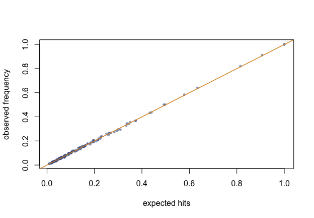

A sampling package must earn trust the design-based way: the inclusion probabilities it claims must be the ones it delivers. This vignette checks the package’s promises by simulation — every number below is recomputed when the vignette is built.
The sample size is always exact
Not on average: always. Ten thousand selections, every one with exactly the expected hits it was asked for.
frame <- data.frame(size = rlnorm(150, 2))
n_hits <- replicate(10000, {
s <- chromy_sample(frame, n = 23, size = "size")
sum(s$sample$hits)
})
table(n_hits)
#> n_hits
#> 23
#> 10000Expected hits are delivered
For each unit, the fraction of selections in which it was hit must converge to its expected hits. The largest absolute deviation over the whole frame, against the Monte Carlo error it should sit within:
lambda <- expected_hits(frame$size, 23)
hits <- matrix(0L, 4000, nrow(frame))
for (r in seq_len(nrow(hits))) {
s <- chromy_sample(frame, n = 23, size = "size")
hits[r, s$sample$unit] <- s$sample$hits
}
observed <- colMeans(hits)
mc_se <- sqrt(lambda * (1 - lambda) / nrow(hits))
max(abs(observed - lambda))
#> [1] 0.01554681
max(abs(observed - lambda) / pmax(mc_se, 1e-6)) # in Monte Carlo SEs
#> [1] 2.430212
plot(lambda, observed,
xlab = "expected hits", ylab = "observed frequency",
pch = 16, col = "#35508C88", cex = 0.7
)
abline(0, 1, col = "#D9962E", lwd = 1.5)
Figure of the chunk unbiased-plot
Minimum replacement holds
Hits never stray further than one from the expectation, including for units expected more than once:
heavy <- data.frame(size = c(900, 500, rlnorm(60, 2)))
ok <- replicate(2000, {
s <- chromy_sample(heavy, n = 12, size = "size",
min_replacement = TRUE)
all(s$sample$hits == floor(s$sample$expected_hits) |
s$sample$hits == ceiling(s$sample$expected_hits))
})
all(ok)
#> [1] TRUEThe estimator is unbiased and the variance honest
The multiplicity estimator must centre on the true total; the successive-difference variance has no unbiasedness to promise under a systematic-like design, but it should sit near the Monte Carlo variance — and err on the conservative side when the serpentine order carries real structure.
pop <- data.frame(
stratum = rep(sprintf("s%02d", 1:10), each = 30),
size = rlnorm(300, 2)
)
pop$y <- 50 + 10 * pop$size + rnorm(300, sd = 15)
truth <- sum(pop$y)
runs <- t(replicate(2000, {
s <- chromy_sample(pop, n = 50, size = "size",
order_by = c("stratum", "chromy_size"))
e <- estimate_total(s, "y")
c(total = e$total, var = e$se^2)
}))
c(
relative_bias = mean(runs[, "total"]) / truth - 1,
empirical_var = var(runs[, "total"]),
mean_sd_var = mean(runs[, "var"]),
variance_ratio = mean(runs[, "var"]) / var(runs[, "total"])
)
#> relative_bias empirical_var mean_sd_var variance_ratio
#> 5.229982e-04 2.682902e+06 4.660619e+06 1.737156e+00A ratio near one says the successive-difference variance is a fair report; above one, a conservative one.
The reference implementation
The package was distilled from a reference R implementation, kept
verbatim in the test suite
(tests/testthat/helper-reference.R) as an oracle: given the
same seed, chromy_sample() must reproduce it draw for draw
— the same head, the same uniforms, the same hits — across size-column,
multivariate, serpentine, nested, residual-head and minimum-replacement
designs. The Rust engine is itself pinned to the same reference by
golden fixtures (tests/golden.rs in
chromy-core), with the integer outputs exact and the
floating-point outputs at machine precision. A SAS or Stata user can
check the procedure against
PROC SURVEYSELECT METHOD=PPS_SEQ or ppschromy
on their own frames; the designs agree in distribution, though not draw
for draw, since each system consumes its own generator.